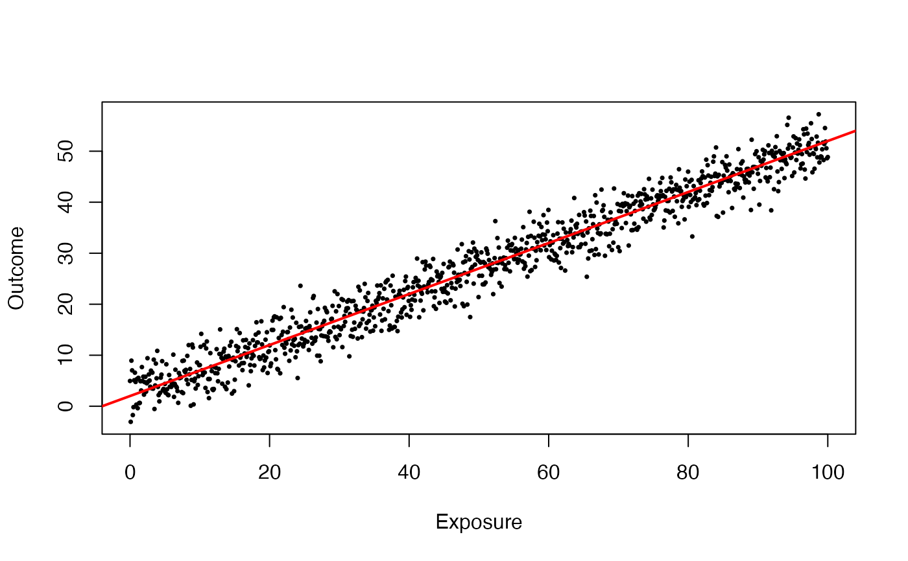

Simulated Examples for Exploring Binning Decisions
binwise_examples.RdFive reproducible teaching datasets that illustrate distinct reasons to inspect a variable before categorizing it. All observations are simulated and contain no research or personal data.
Format
Each object is a data frame with 1000 rows and an integer id column.
- binwise_zero
Also contains numeric
score, with 400 exact zeros and 600 positive beta-distributed values. In this fictional setting, zero means no participation and positive values measure participation intensity.- binwise_tail
Also contains numeric
share, a positive fraction strictly between zero and one, with most values near zero and a long upper tail.- binwise_smooth
Also contains numeric
exposure,outcome, andexpected_outcome. Exposure spans 0 to 100. The conditional expected outcome is exactly2 + 0.5 * exposure; observed outcomes add normal noise with standard deviation 3.- binwise_negative
Also contains numeric
score, with 400 observations equal to -10 and 600 uniform draws between -9.9 and -0.1, randomly shuffled. The numeric columnshifted_scoreis exactlyscore + 11, making every value positive without changing the ordering, ties, or differences between observations. The score is a fictional index with an arbitrary origin; the repeated value -10 is not assigned a distinct substantive meaning.- binwise_mixed
Also contains numeric
change, comprising 700 negative changes and 300 positive changes, randomly shuffled, with magnitudes drawn uniformly between 0.1 and 10. No observation equals zero. In this fictional setting, negative values mean declines and positive values mean increases.
Details
The zero example illustrates a substantive reason to distinguish zero from positive values. It does not require categorizing all positive variation. The tail example illustrates the trade-off between balanced counts and retaining upper-tail distinctions; skewness alone does not require bins. The smooth example has no threshold in its generating relationship. Categorizing exposure groups together observations with different expected outcomes. This illustrates what arbitrary bins can hide, rather than establishing that bins are inappropriate for every descriptive or communication purpose.
The negative example demonstrates that ties can prevent equal-sized quantile bins at any value. Shifting the index to positive values preserves assignments under the same automatic methods, so negative signs alone do not justify bins. Do not split tied values just to meet a requested group count. A repeated value does not automatically deserve a dedicated category without substantive meaning.
The mixed-sign example has balanced quartiles that mix declines and increases
within the third group. If distinguishing direction is the purpose, a custom
zero boundary gives groups of 700 and 300 observations. Unequal counts are
compatible with that purpose. Two direction groups still hide magnitude, so
additional thresholds or a continuous representation may suit other purposes.
Zero need not be observed to be a useful boundary. A zero boundary is different
from a separate zero category: intervals are right-closed, so a future exact
zero would enter the lower interval. Automatic separate_zero = TRUE
currently requires nonnegative data and is not used in these examples.
The generator uses seed 9388 with Mersenne-Twister, Inversion, and Rejection RNG
settings. In order, it samples 400 zeros and 600 Beta(2,5) draws, generates
plogis(rnorm(1000, -5, 2.3)), shuffles 1000 equally spaced exposure values
from 0 to 100, and adds normal outcome noise. It then generates and shuffles
the negative index, followed by the negative and positive changes described
above. Adding these examples preserves the three original datasets.
The source repository includes
data-raw/generate_examples.R, which restores the caller's RNG state.
These examples do not automatically determine whether to bin a user's data.
Examples
data(binwise_zero)
d <- bin_diagnose(binwise_zero, "score", bins = 3,
separate_zero = TRUE, warn = FALSE)
applied <- bin_apply(binwise_zero, d)
table(applied$score_bin)
#>
#> Zero B1 B2 B3
#> 400 200 200 200
data(binwise_tail)
bin_compare(binwise_tail, "share")
#> binwise comparison of share
#>
#> * All 2 schemes use the same 1000 finite observations; 0 missing and 0 infinite values are excluded.
#> * There are no exact zeros in this sample; none of the schemes adds a zero category.
#> * quantile_4 produces 4 intervals plus 0 zero category, with 0 empty and 0 flagged categories. Its largest category contains 25.00% of the sample; its widest observed within-bin range runs from 0.032416 to 0.96665.
#> * equal_width_4 produces 4 intervals plus 0 zero category, with 0 empty and 2 flagged categories. Its largest category contains 95.60% of the sample; its widest observed within-bin range runs from 0.72732 to 0.96665.
#> * Use category sizes to assess balance and within-bin ranges to assess which values are grouped together. A small tail category can be intentional. These summaries do not select a best scheme.
#>
#> Category counts and sizes
#> scheme requested intervals zero_bins empty sparse smallest_n largest_n
#> quantile_4 4 4 0 0 0 250 250
#> equal_width_4 4 4 0 0 2 5 956
#>
#> Observed spread within categories, in the variable's original units
#> scheme smallest_pct largest_pct widest_bin observed_min observed_max
#> quantile_4 25.0 25.0 B4 0.03242 0.9666
#> equal_width_4 0.5 95.6 B4 0.72732 0.9666
#> widest_range
#> 0.9342
#> 0.2393
#>
#> Requested and intervals exclude any separate zero category.
#> Smallest/largest sizes include empty bins and any zero category; percentages use all finite rows.
#> Sparse means n < 20 or proportion < 0.01.
#> Inspect $bins for every boundary and count, or $diagnoses for each full assessment.
data(binwise_smooth)
plot(binwise_smooth$exposure, binwise_smooth$outcome,
xlab = "Exposure", ylab = "Outcome", pch = 16, cex = .5)
abline(a = 2, b = .5, col = "red", lwd = 2)

data(binwise_negative)
bin_diagnose(binwise_negative, "score", bins = 4, warn = FALSE)
#> binwise diagnosis of score
#>
#> Assessment
#> * There are no exact zeros in the supplied sample; a separate zero category is unnecessary here.
#> * Repeated boundaries reduce 4 requested intervals to 3. Equal values stay together; requesting more quantile bins may not produce equally sized groups.
#> * The largest interval, B1, contains 500 observations (50.00% of observations assigned to intervals). Compare this balance with your intended use of the categories.
#> * The widest observed within-bin range is in B2, from -8.4278 to -4.2728 (42.26% of the full observed range). If distinctions within that range matter, consider additional or custom boundaries there.
#>
#> 1000 finite observations out of 1000 rows
#> 0 missing; 0 infinite; 601 unique finite values
#> 0 exact zeros ( 0 % of finite values)
#> min median mean max sd skewness
#> -10 -8.428 -7.01 -0.1684 3.306 0.6547
#>
#> Percentiles
#> probability value
#> 0.00 -10.0000
#> 0.01 -10.0000
#> 0.05 -10.0000
#> 0.10 -10.0000
#> 0.25 -10.0000
#> 0.50 -8.4280
#> 0.75 -4.2702
#> 0.90 -1.5420
#> 0.95 -0.8777
#> 0.99 -0.2851
#> 1.00 -0.1684
#>
#> Candidate bins using quantile
#> Requested 4 interval bins; created 3 interval bins and 0 zero category
#> bin lower upper n proportion sparse
#> B1 -10.000 -8.4280 500 0.50 FALSE
#> B2 -8.428 -4.2702 250 0.25 FALSE
#> B3 -4.270 -0.1684 250 0.25 FALSE
#> Intervals include the upper boundary; the first also includes the lower boundary.
#>
#> Notes
#> * Requested 4 interval bins; only 3 distinct intervals are possible with these boundaries. Repeated boundaries were collapsed; tied values stay together.
#>
#> These diagnostics describe the supplied data and candidate boundaries.
data(binwise_mixed)
direction <- bin_diagnose(binwise_mixed, "change", method = "custom",
breaks = c(min(binwise_mixed$change), 0, max(binwise_mixed$change)), warn = FALSE)
direction$bins
#> bin lower upper left_closed right_closed singleton n proportion
#> 1 B1 -9.996723 0.000000 TRUE TRUE FALSE 700 0.7
#> 2 B2 0.000000 9.984339 FALSE TRUE FALSE 300 0.3
#> sparse sd mean observed_max observed_min
#> 1 FALSE 2.888993 -5.141220 -0.1012267 -9.9967231
#> 2 FALSE 2.811026 5.216095 9.9843392 0.1316398